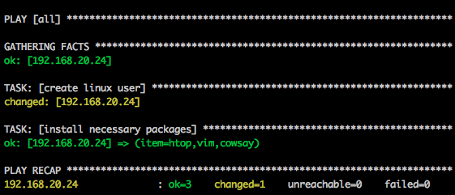

Slides by Tanner Semerad
What is Ansible?
From the site...
Ansible is a radically simple IT automation engine that automates cloud provisioning, configuration management, application deployment, intra-service orchestration, and many other IT needs.
Yeah yeah, but why do we care about Ansible?
Yeah yeah, but why do we care about Ansible?
Ansible makes setting up servers and deploying application code simple and repeatable
Why am I here today?
Let's rewind 12 months...
Setting up my first server...
AKA, how Ansible saved my sanity
Goal:
develop a Python web mapping application
Me
- Limited knowledge of command line
- Had never set up a server before
- Bash scripts?
It’s fine
Our sys admin does this stuff in his sleep.
Sys admin sets up requirements on our internal server… by hand (2+ days)
I begin developing on the server
After awhile, decide to put it in the cloud
Start from scratch
Sys admin starts setting up the server… by hand, again.
Should be the exact same setup we've been developing with, but isn't. :(
Why use Ansible?
(or configuration management in general)?
Automate application deployment
Ensure that your development machine is set up exactly like your production machine(s)
Version controllable
That's right - version control your machines!
Why use Ansible over other CM solutions?


Simpler setup
I’m an occasional sys admin. The less I have to set up, the sooner I can get back to my actual code.
Much less overhead
- No setting up agents
- No setting up a "master" server
When a team is using DevOps, you want everyone to be comfortable with the tools.
- Plugins can be made in any language
- Readable by just about anyone
---
- hosts: all
sudo: yes
tasks:
- name: create linux user
user:
name: test
comment: "Fake User"
uid: 1041
Install Ansible
Ubuntu
sudo apt-get update
sudo apt-get install -y python-software-properties
sudo apt-add-repository -y ppa:ansible/ansible
sudo apt-get update
sudo apt-get install -y ansible
Mac
brew update
brew install ansible
Ansible has a few commandline tools
ansible - Ad-hoc commands
ansible-playbook - Run a playbook (collection of commands (plays) to be run in a particular order)
ansible-galaxy - grab a reusable community-created playbook role off of Ansible's servers
We mainly care about ansible-playbook
Let's make a simple playbook that adds a user
First we'll create a playbooks directory
mkdir playbooks
Then we'll create the .yml playbook
playbooks/system.yml
---
- hosts: all
sudo: yes
tasks:
- name: create linux user
user:
name: test
comment: "Fake User"
uid: 1041
To run a playbook
ansible-playbook -i hosts -u vagrant --private-key=~/.vagrant.d/insecure_private_key playbooks/system.yml
-i hosts - point to a hosts file that lists IPs or domains of servers to control
hosts
YOUR_VMS_IP
# Examples
192.168.99.99
a.example.com
b.example.com
Note: Vagrant runs the ansible-playbook command properly when you run vagrant provision, or the first time you run vagrant up.
Let's install some packages from a list with our playbook
---
- hosts: all
sudo: yes
tasks:
- name: create linux user
user:
name: test
comment: "Fake User"
uid: 1041
- name: install necessary packages
apt:
name: {{ item }}
update_cache: yes
with_items:
- htop
- vim
- pip
Ansible is idempotent - only changes what is necessary to get the machine to the desired state
Let's remove the user we just added...
---
- hosts: all
sudo: yes
tasks:
- name: create linux user
user:
name: test
comment: "Fake User"
uid: 1041
state: absent
- name: install necessary packages
apt:
name: {{ item }}
update_cache: yes
with_items:
- htop
- vim
- pip
We see that Ansible color-codes each play based on whether it made any changes

Now let's head to github, and grab an Ansible-built Django stack
git clone https://github.com/jcalazan/ansible-django-stack.git
Build it with vagrant up from your host machine
cd ansible-django-stack
vagrant up
Note: If you're running Windows as your host OS, this git repo won't work since Ansible doesn't run on Windows